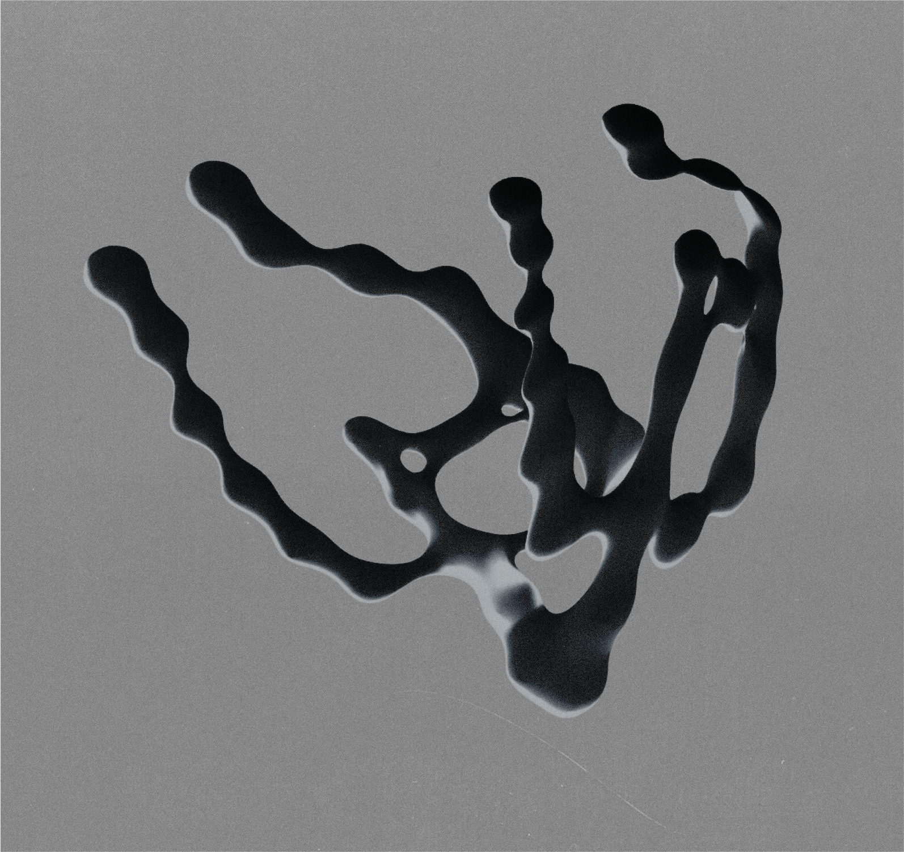
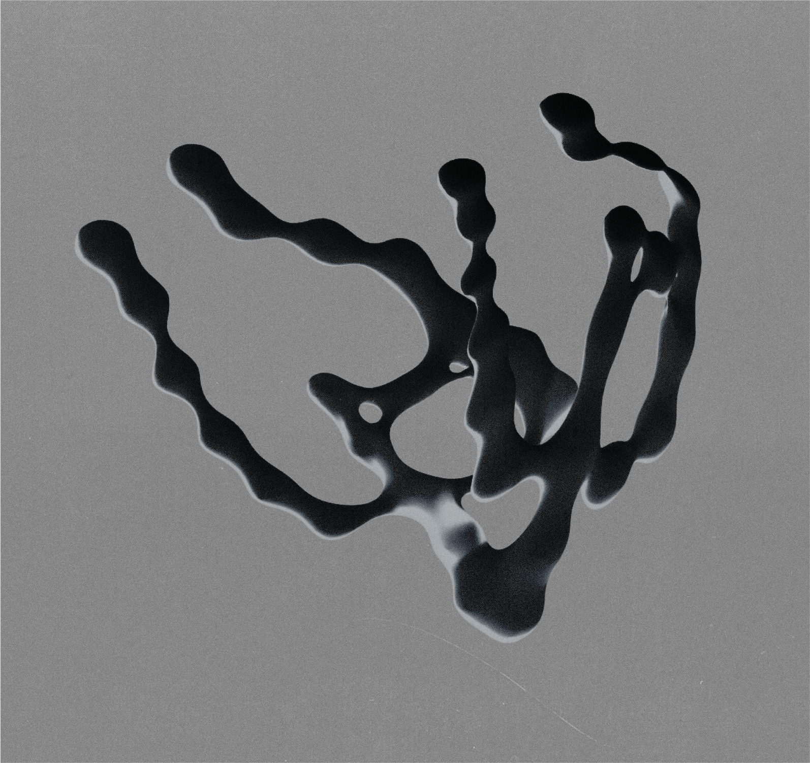

Glimmer
Released by Anterior Insula
Released digitally and on a limited run of 40C cassette tapes
Available with limited edition booklet containing additional text and artwork.
26-11-2023
Iridescence is an optical property where the color of an object is determined by the angle of the viewer, often observed in a puddle of an oil spill, soap bubbles or the surface of a compact disc. The seven sparse pieces on Acasta Gneiss’ Glimmer have a similar quality. Building on repetitive structures these compositions drift in and out of focus, seemingly changing with each iteration. As the album progresses ethereal synth pads are contrasted with recordings inspired by asmr practices, heavily processed using digital techniques. Glimmer offers an immersive, sometimes unnerving experience, but ultimately hopeful, like a faint, wavering, light in the distance illuminating the darkness.
Tracklist:
- In tears 03:20
- Simulacrum 03:32
- Altar 04:54
- Radiance 02:13
- The pearl 04:58
- A glimmer 04:29
- Leliestad 03:50
>>>> Listen/buy the album
All music & text by Acasta Gneiss
Artwork & cassette design by Joachim Bovin
Recorded intermittently between 2021 and 2023
Mastered by Denis Wouters at nofi studios
 
